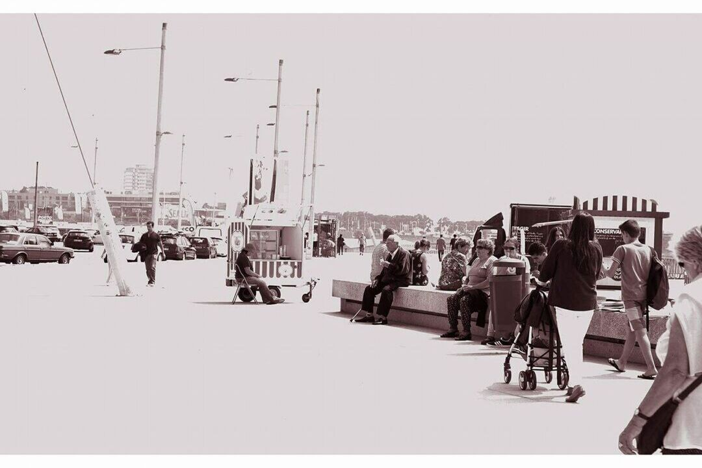

Anémona Matosinhos
Anémona Matosinhos
 Praça dos Leões Porto
Praça dos Leões Porto
Marginal Matosinhos
I am well aware that I am not a professional photographer and everything I have learned has been on a trial
and error
basis.
But I don't deny that there are pictures that I LOVE, I love to look at them and sometimes I can't believe
that I was in
the right place at the right time.
I hope you enjoy them as much as I do!
Anémona Matosinhos
Praça dos Leões Porto
 Castelo do Queijo
Castelo do Queijo
 Ponte da Arrábida
Ponte da Arrábida